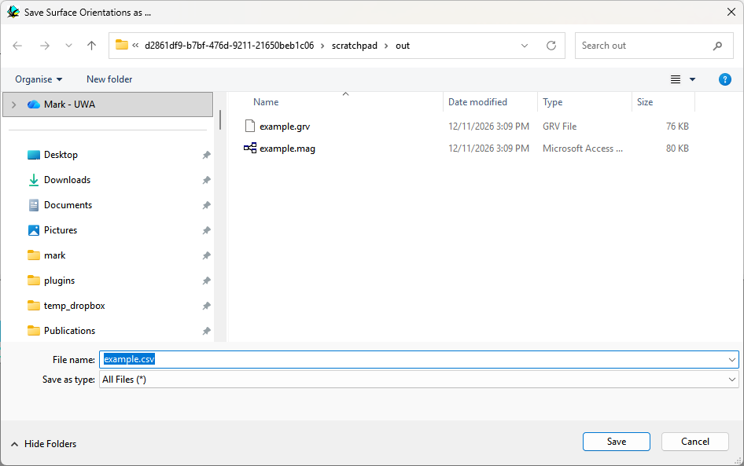

Saving surface orientations
NewAdded in the Qt version.
samples the bedding orientation and rock type on a regular grid over the whole top surface of the model and writes them to a CSV file. It is the automatic equivalent of clicking Bedding symbols all over a map.

- The grid covers the block defined in Block Options, with a spacing equal to the Geology cube size.
- Points are on the top surface of the block, or on the topography where a topography file is loaded and Use Topography is on.
- Every grid point produces a row, so the lithology is always recorded. Where no bedding orientation can be calculated
(for example inside an igneous body) the dip and dip direction are written as
-99.
File format
A header line followed by one line per grid point:
x,y,z,dip,dip direction,lithonameUnits are metres and degrees; lithoname is the name of the stratigraphic unit or igneous body at that point. The file can be opened in a spreadsheet or loaded into a GIS as points.
Noddy · open source under the MIT licence · Loop3D/noddy_qt